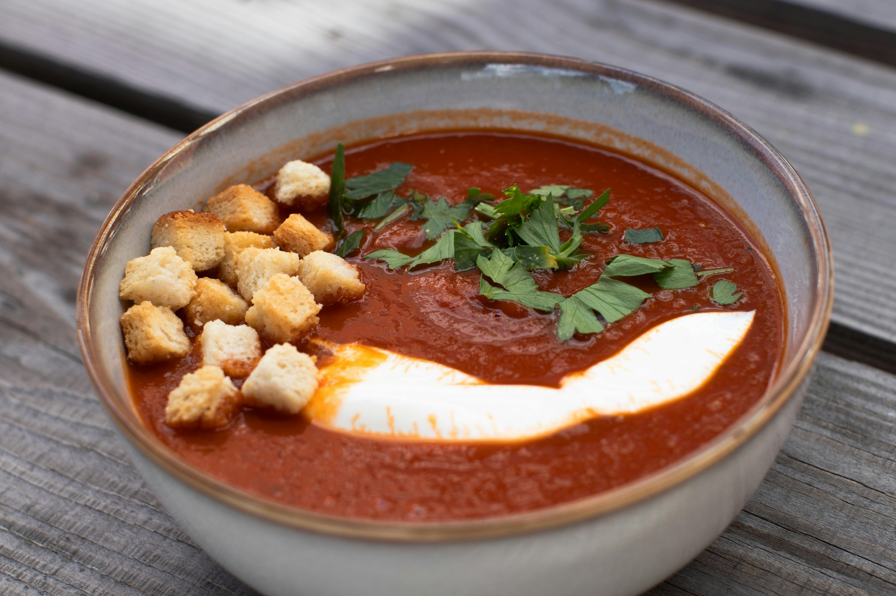

Tomato Soup

Ingredients
- 8 - 10 Medium-sized Fresh tomatoes, halved
- 1 medium Onion, chopped
- 4 cloves Garlic, smashed
- 2 tbsp oil (olive or any cooking oil)
- 1 cup Warm water mixed with a vegetable soup cube
- 1/4 cup Heavy cream (optional)
- Salt and black pepper to taste
- Fresh coriander leaves for garnish
Instructions
- Preheat your oven to 400°F (200°C). Put a piece of baking paper on your tray.
- Place the halved tomatoes, chopped onion, and smashed garlic on the baking sheet. Drizzle evenly with oil and season generously with salt and pepper.
- Roast in the oven for 30-35 minutes, or until the tomatoes are soft and slightly charred.
- Carefully transfer the roasted vegetables and any juices from the pan into a blender. Blend until smooth.
- Pour the blended soup into a large pot over medium heat. Stir in the vegetable broth and bring to a gentle simmer.
- Reduce the heat to low, stir in the heavy cream (if using), and let it warm through for 2-3 minutes.
- Serve hot, garnished with fresh coriander leaves, add a heavy cream for extra richness!